Equilibrium
|
Since Thomas Ways’ pioneering experiments of the mid 19th century, it has been well known that most ion exchange materials prefer some ions over others. This phenomenon, known as selectivity, is determined largely by complicated thermodynamics that are not yet fully understood. However, qualitative observations have led to the following general trends and selectivity sequences: · Selectivity increases with higher valence charge (i.e. Ca+2 > Na+) · Larger ions are preferred over their smaller counterparts. Example Ion exchange techniques are often used in water softening processes. In order to soften the water a resin must be used that will easily absorb calcium ions.
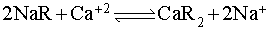
(4)
As shown on table 2, the molar selectivity constant for Na+
is 2.0, while the molar selectivity constant for Ca+2 is
5.2. The resin will
prefer the calcium ions, and easily detach from the sodium ions.
|
|
Selectivity |
Relative Molar Selectivities for Cations with 8%
Cross-linked Strong-Acid Resin |
Approximate Relative Molar Selectivities for
Anions with Strong-Base Resins |
||
|
highest |
Ba+2 |
11.5 |
I- |
8 |
|
|
Pb+2 |
9.9 |
NO3- |
4 |
|
|
Ag+ |
8.5 |
Br- |
3 |
|
|
Sr+2 |
6.5 |
HSO4- |
1.6 |
|
|
Ca+2 |
5.2 |
NO2- |
1.3 |
|
|
Mn2+ |
4.1 |
CN- |
1.3 |
|
|
Be2+ |
4.0 |
Cl- |
1.0 |
|
|
Ni+ |
3.9 |
BrO3- |
1.0 |
|
|
Cd+2 |
3.9 |
OH-
(Type II) |
.65 |
|
|
Cu+2 |
3.8 |
HCO3- |
.4 |
|
|
Co+2 |
3.7 |
CH3COO- |
.2 |
|
|
Zn+2 |
3.5 |
F- |
.1 |
|
|
Mg+2 |
3.3 |
OH-
(Type I) |
.05-.07 |
|
|
Cs+ |
3.3 |
SO4-2 |
.15 |
|
|
Rb+ |
3.2 |
CO32- |
.03 |
|
|
K+ |
2.9 |
HPO42- |
.01 |
|
|
NH4+ |
2.6 |
|
|
|
|
UO22+ |
2.5 |
|
|
|
|
Na+ |
2.0 |
|
|
|
|
H+ |
1.3 |
|
|
|
lowest |
Li+ |
1.0 |
|
|
adapted from Harland, 1994 and Seader et al, 2006
It is important to note that table 2 gives molar selectivity values for strong acid resins and strong base resins. The selectivity sequence will change with the use of different resins, such as chelating resins (Pontius, 1990). For the use of weak acid resins and weak base resins, the sequence will remain similar, but the values of the coefficients will change. For weak acid resins the most selective ion is the hydrogen ion, while for weak base resins the most selective ion is the hydroxide ion. Strong acid/base resins are the most commonly used in commercial applications and therefore will be the focus in module.
The
general form for cation and anion exchange is,
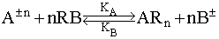 (5)
Where,
| 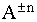 |
≡
cation or anion |
| 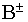 | ≡
H+ for
cation exchange or OH- for anion exchange |
| KA | ≡ relative
molar selectivity coefficient of the ion |
|
KB |
≡ relative molar selectivity coefficient of |
| R | ≡ resin |
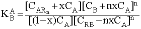 (6)
which represents the distribution of the counter ions A and B between the exchange resin and the external solution. To find the equilibrium concentration of each component we use the equation,
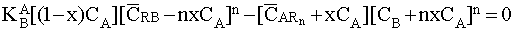 (7)
Using equation 7 and making x negative will give the molar selectivity coefficient for the regeneration process.
Single Component
Ion Exchange Equilibrium: Cation Exchange
The general equation of cation exchange where ion A replaces the hydrogen ion is,
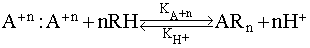 (8)
The molar
selectivity coefficient for cation exchange is,
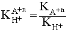 (9)
At
equilibrium, the concentrations of components in both phases satisfy:
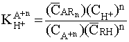 (10)
Where,
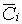
: Concentration of component
i in the resin phase,
mol·m-3
:
Concentration of component i in
the solution phase, mol·m-3
Single Component
Ion Exchange Equilibrium: Anion Exchange
The general equation for anion exchange at equilibrium where the ion A replaces the hydroxyl ion OH- is,
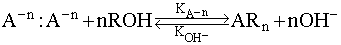 (11)
The molar
selectivity coefficient for anion exchange is,
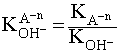 (12)
At
equilibrium, the concentrations of components in both phases satisfy:
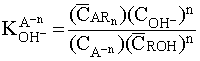 (13)
Multi-Component Ion Exchange
Equilibrium:
Multi-component ion exchange is used in many process applications such as
water treatment, hydrometallurgical processing and chromatographic
separations. The equilibrium
equation is written as:
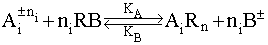 (14)
Where,
: Ion with positive charge +n or negative charge -n
: is H+ for cation exchange; OH- for anion exchange
KA: Relative molar selectivity coefficient of ion
KB: Relative molar selectivity coefficient of
i : i’th ion component
Multi-component ion exchange is preferred in most ion exchange applications. In real water systems there are multiple undesirable ions, i.e. Ca2+, Mg, Ba. This equation gives a more complex way to analyze how resins with different selectivities will remove each specific ion.
The molar selective coefficient for multi-component ion exchange is:
The governing equation for solving equilibrium between the solution and resin phase is,
Separation Factor
Separation FactorExperimental selectivity’s are often represented using a quantity known as a separation factor, which is defined in terms of concentration or mole fraction. It is important to note that variables describing the resin are denoted with a bar as shown in equation 17 (Harland, 1994). 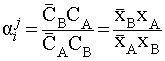 (17) 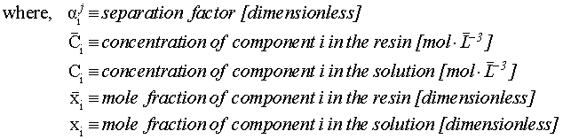 |
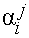 values greater than 1 indicate that the resin favors component B, while less than 1 mean that the resin prefers component A. Also, usually approaches 1 as the solution becomes more dilute. Separation factors can also be determined visually by examining a graph of xi versus xi as shown in figure 8.
|
|
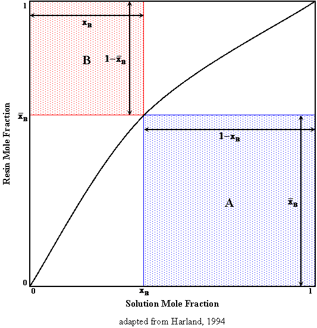
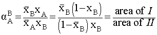 (18)
Like all other physical processes, ion exchange proceeds in the direction that minimizes the system’s chemical potential. Equilibrium occurs when the pure component chemical potentials of the reactants equals those of the products. This phenomenon can be described by an equilibrium constant that is characteristic of the particular reaction and dependent only on temperature. For example, the equilibrium constant for a general ion reaction,
(5)
would be,
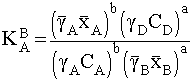 (19)
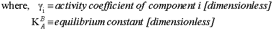
The activity coefficient is a correction term that accounts for the non-ideality of a system. For ion exchange systems, activity coefficients for the solution depend on composition and temperature. Generally, g approaches 1 as the solution becomes more dilute which applies to the majority of ion exchange applications when using UPW. Finding activity coefficients requires the use of an empiricals model that satisfy the Gibbs-Duhem Equation and is beyond the scope of this unit.
|
Kinetics
Several chemical and physical effects govern the overall rate of an ion exchange reaction, including · Concentration gradients in both the solution and the resin · Electrical charge gradients in both the solution and the resin · Ionic interactions in either the solution or the resin · Resin properties (porosity, functional groups, capacity) · Chemical reactions in either the resin or solution (Harland, 1994)
|